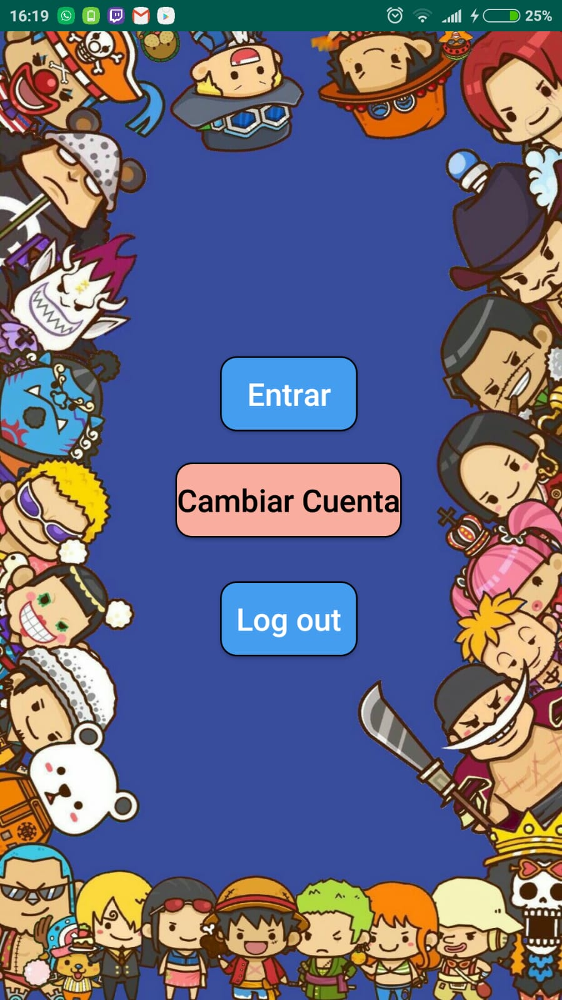
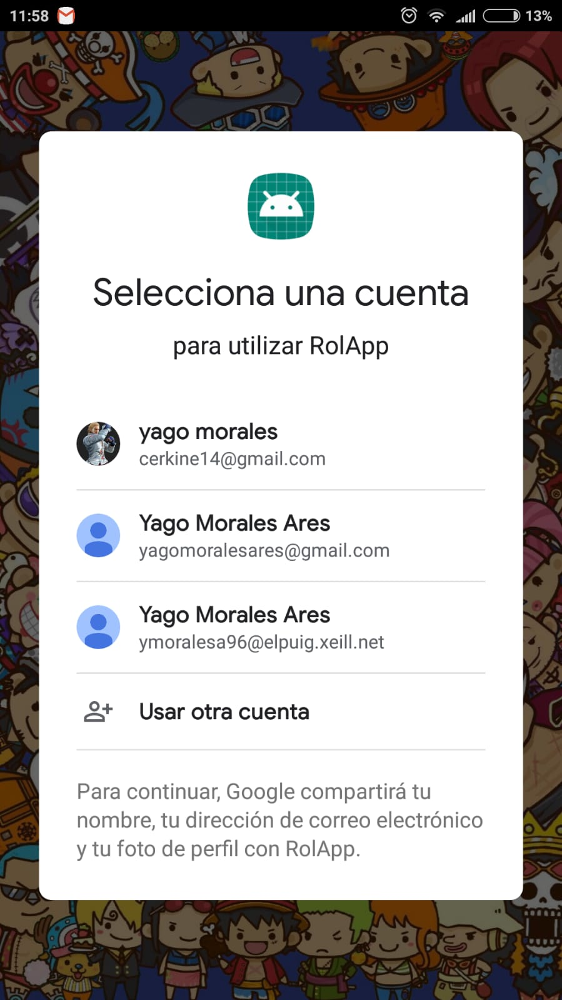
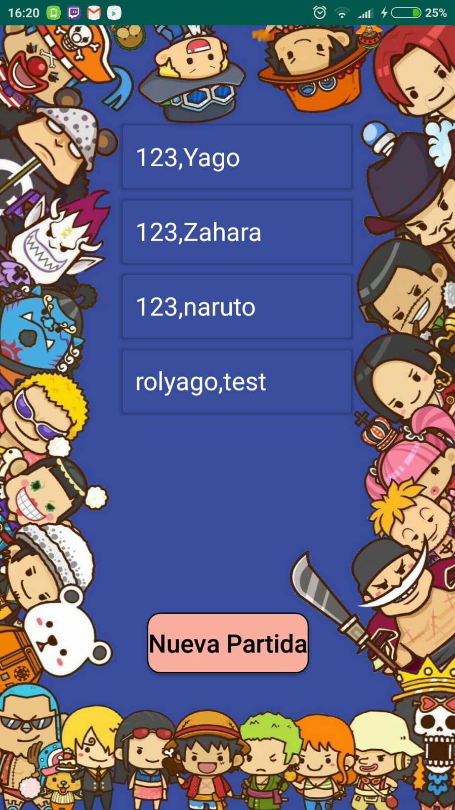
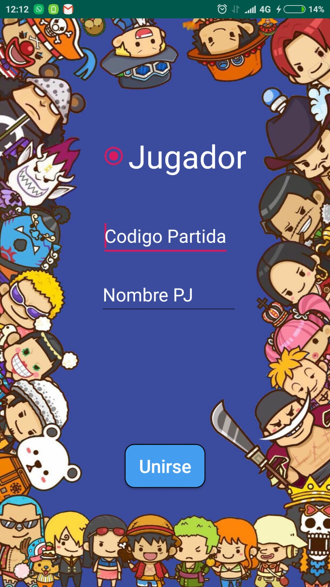
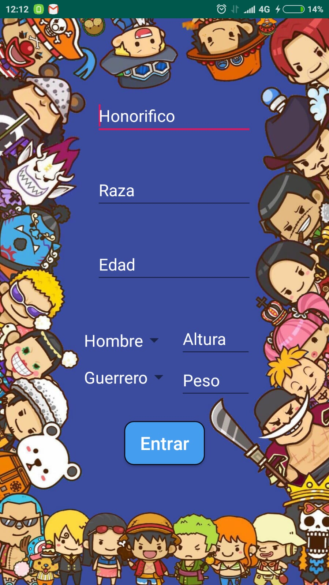
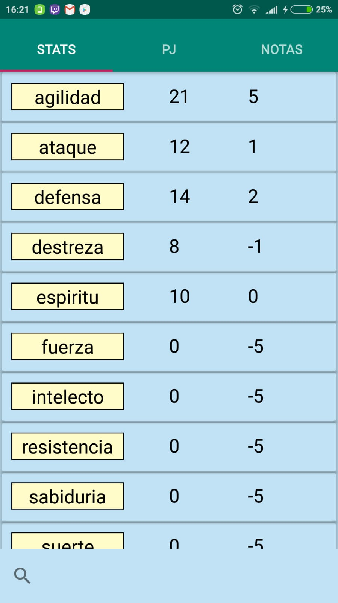
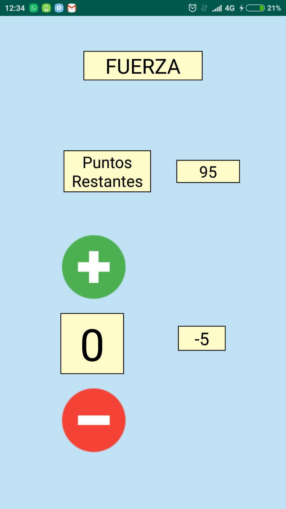
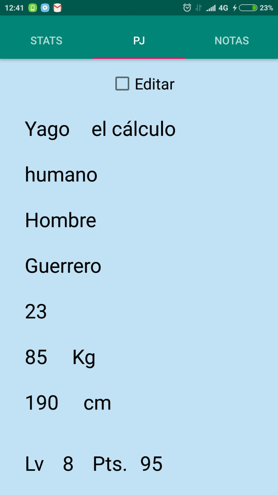
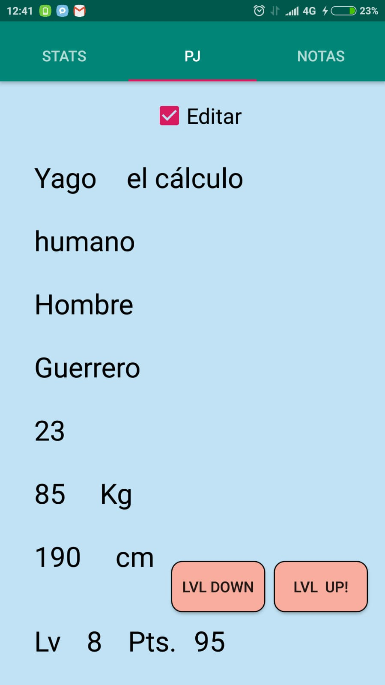
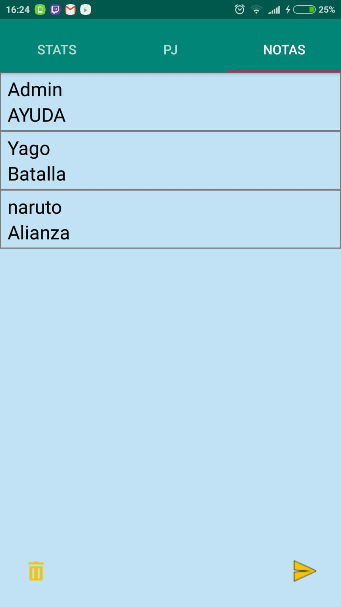

RolApp
Esta aplicación esta enfocada en llevar las fichas de personajes de juegos de rol. Tiene dos grandes bloques, el primero todo lo que tiene que ver con los stats del personaje, y el segundo esta relacionado con la comunicacion entre jugadores y la posibilidad de llevar un diario.
Login
El sistema de login de RolApp funciona gracias a Firebase, una plataforma gratuita de Google. Solo esta habilitado el servicio de gmail, es decir podemos registrarnos con una cuenta de Google, sino tuvieramos una o no quisieramos utilizar la nuestra para esta aplicación te puedes crear una al instante. Todos los datos los gestiona Google, eso quiere decir que los datos no pasan atraves de nosotros.
Con la primera opción si no hay cuenta preseleccionada, te da la opción de escoger una cuenta que este asocidada al dispositivo. Si ya hay una cuenta preseleccionada automáticamente te lleva a la siguiente pantalla.
La opción de cambiar cuenta te permite cambiar la cuenta ya preseleccionada por otro distinta, ya sea porque quieres acceder a los stats que tengas en otra cuenta, o que te hayas equivocado previamente.
La úlitma opción no sirve para desvincular la cuenta seleccionada, por sino queremos que se quede guardada en la aplicación.
Creacion de Personaje/Partida
Cuando hayamos pasado la pantalla de login, la siguiente sera la pantalla de elección de personaje o creación de uno nuevo.
Aquí podremos seleccionar el personaje con el que estaremos jugando nuestra partida de rol o podremos ir a la creación de personaje. Si accedemos a la creación de personaje veremos un formulario para rellenar.
En esta primera pantalla podemos observar dos campos, el primero es el código de partida, si ponemos el mismo código de partida a todos los jugadores, esto nos permitira crear una comunicación que nos permitira enviar mensajes. El segundo campo es el nombre de jugador.
La siguiente pantalla tiene un formulario un poco mas extenso sobre el personaje.
Aquí podemos observar algunos campos más. Todos muy intuitivos, Honorífico, sera el título honirífico que usaremos para nuestro personaje. El de raza marcara la raza que somos, también podemos marcar nuestra edad, el sexo de nuestro personaje, la altura y el peso, y por último hay tres clases que puedes poner, sabemos que seguramente tengas una clase que no este puesta, no te preocupes esto no influye en nada en las estadísticas.
Personaje y utilidades
Ahora entramos en la base de la aplicación. Són tres pestañas claras. La primera es sobre los stats del personaje y la posibilidad de cambiarlos haciando un tap largo en el atributo que se desee cambiar.
 En la segunda pestaña aparecen los datos del personaje y la posibilidad de marcar la subida de nivel.
 La última pestaña nos permite enviar mensajes o llevar un diario sobre nuestra partida de rol.
